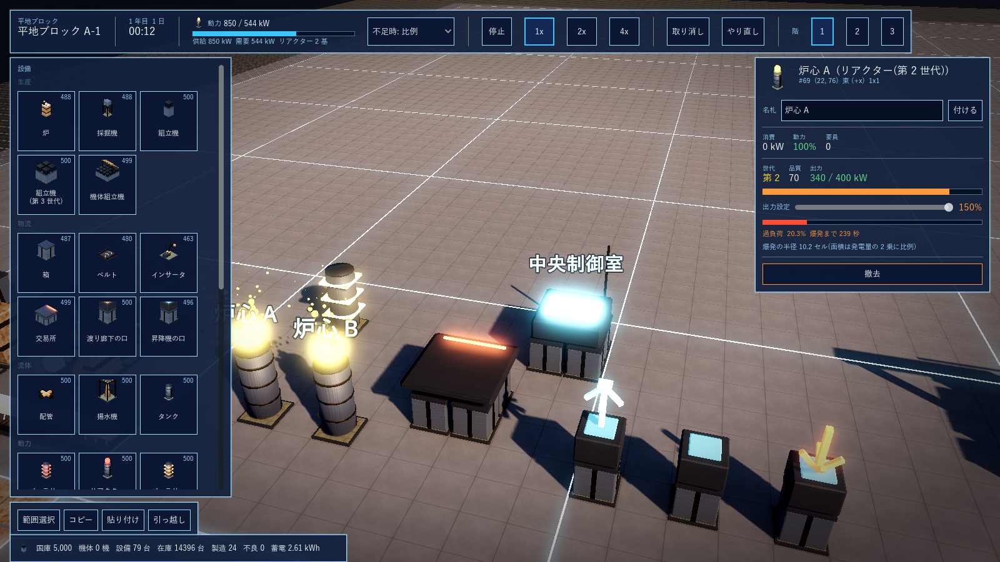
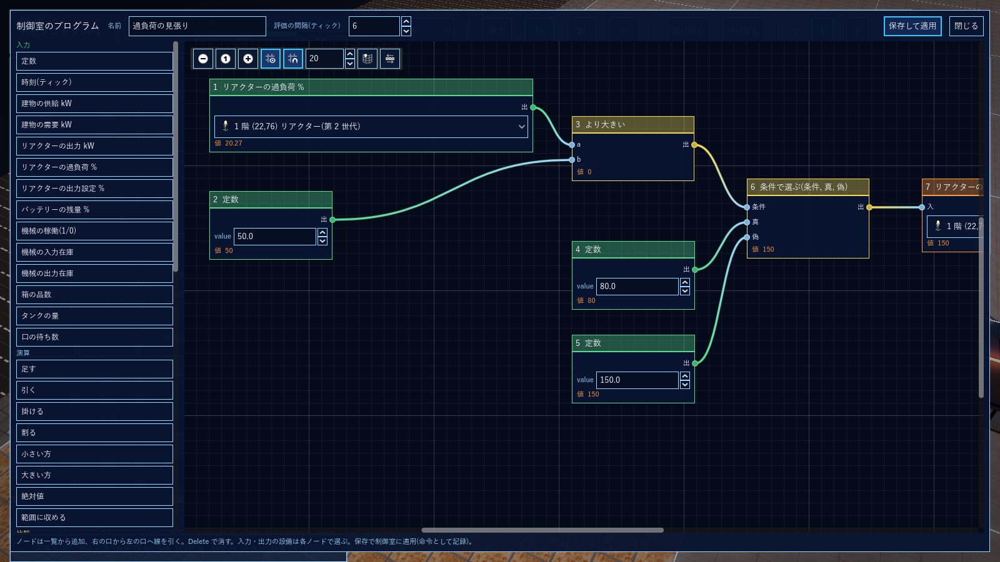
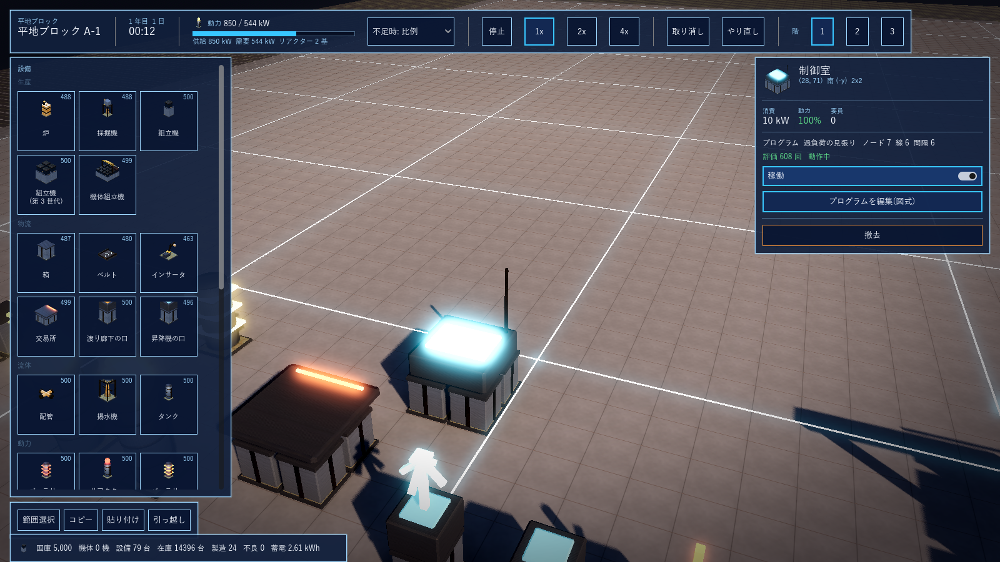

G15 マイコン制御
2026-10-15 に G1 から分離。ノード図のプログラム、制御室、図式エディタ、同種の設備の判別。
1. マイコン制御(2026-10-15 確定・第 1 段階)
sim/GPS.Sim/Mcu.cs。プログラム = ノードの一覧 + 線の一覧 + 評価の間隔(既定 6 ティック = 10 回/秒)。制御室(control_room 2x2、10 kW)に命令 SetProgram で載せる。建物に電気が無いと評価しない。評価はノードの番号順で、線は元ノードの今回の値(未評価なら前回の値)を読む(ループは 1 評価遅れ = Stormworks と同じ)。出力は次のティックから効く。参照先は (建物, 階, 設備番号) で、電気の無い建物の設備は読めず(0)、書けない。
| 区分 | ノード |
|---|---|
| 入力 | 定数、時刻、建物の供給/需要、リアクターの出力/過負荷 %/出力設定、バッテリーの残量 %、機械の稼働/入力在庫/出力在庫、箱の品数、タンクの量、口の待ち数 |
| 演算・比較・論理 | 足す/引く/掛ける/割る、小さい方/大きい方/絶対値/範囲に収める、より大きい/より小さい/等しい、かつ/または/でない、条件で選ぶ、記憶(書込条件, 値) |
| 出力 | リアクターの出力設定、バッテリーの方式、建物の不足時方針、設備の稼働(1/0。止めた設備は動かず電力も使わない)、交易所の輸入(1/0) |
| 機体(制御基板。計算は戦闘の実装時) | 入力: 自機の耐久/電力/弾薬 %、最寄りの敵との距離、索敵範囲の敵数、最寄りの敵の世代、隊の命令(待機/前進/攻撃/退却)。出力: 交戦する、退却する、優先目標(最寄り/最弱/最強/砲撃手)、使う武器(主/副/近接)、索敵範囲。命令 SetMechProgram |
検証(xunit 34 件、+4): 過負荷の見張り(過負荷 50% 超で出力設定 80%、未満で 150%)が 1 評価遅れで 80 と 150 を行き来しつつ負荷を 45〜55% に保ち爆発しない。別の建物の箱が 80 個以上なら別の建物の炉を止める(建物をまたぐ参照)。制御室の建物の電気が止まると評価しない。記憶ノード。保存と再計算の一致。機体のプログラムの保存。設計図と引っ越しはプログラムも写す。
図式エディタ(game/scripts/McuGraphEditor.cs、Godot の GraphEdit)。制御室の板の「プログラムを編集(図式)」で開く。左に種類の一覧(区分ごとの色: 入力 緑・演算 水色・比較と論理 黄・出力 橙・機体 紫)、中央に図。ノードは一覧から追加、右の口から左の口へ線を引く(同じ入力口に 2 本目を引くと前の線は外れる)、Delete で消す。入力・出力ノードは建物内の設備(全階、種類で絞る)をプルダウンで選び、定数と範囲は数値入力。各ノードの下に動作中の値を 10 回/秒で表示。「保存して適用」で SetProgram 命令にする(取り消しは未対応)。見本は「過負荷の見張り」(過負荷 50% 超で出力設定 80%、未満で 150%)。
同種の設備の判別(2026-10-15 指摘)。座標だけでは実機で区別しにくいので 3 つを足した。(1) 設備の名札: 板の「名札」欄で付ける(命令 SetLabel。設計図と引っ越しで写す)。名札は板の見出し・プルダウン・3D 画面の設備の上(水色)に出る。プルダウンは「名札 #番号 階 (x,y) 種類」。(2) 図式エディタを画面の左 7 割にし、右に 3D 画面を残す。参照している設備の上に「ノード 1,7」のような印(水色の強調)が出る。(3) ノードの「画面で選ぶ」で 3D 画面の設備をクリックして参照先にする(種類が合わなければ拒む)。


